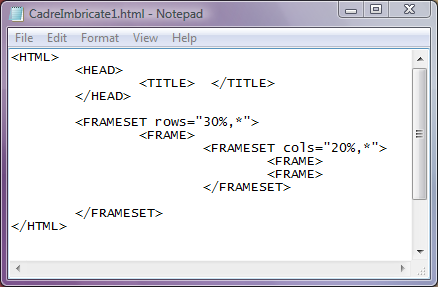
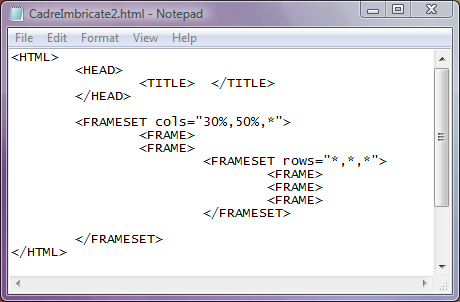
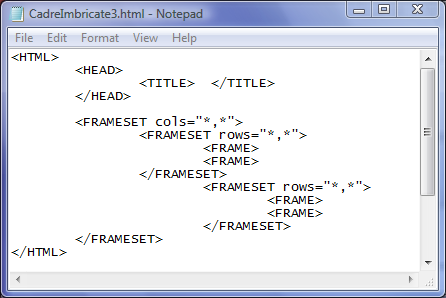

Imbricarea etichetelor FRAMESET
Prin imbricarea etichetelor FRAMESET pot fi realizate divizari combinate ale ferestrei
browserului, adica atat cadre coloane cat si cadre randuri. Evident, trebuie respectata regula de imbricare
a etichetelor, adica daca o instructiune FRAMESET a fost deschisa dupa o eticheta, atunci ea va fi inchisa inainte de eticheta
urmatoare.
Iata un prim exemplu de etichete FRAMESET imbricate, folosite pentru a crea initial doua cadre randuri
iar apoi, in al doilea cadru, doua cadre coloane:
Click pe cod pentru a afisa pagina web....

Observati ca instructiunea FRAMESET imbricata tine locul celei de a doua instructiuni FRAME si defineste
in locul celui de al doilea cadru rand alte doua cadre coloana!
In continuare este prezentat un alt exemplu de imbricare FRAMESET pentru a diviza initial fereastra in
trei cadre verticale, ultimul dintre ele fiind apoi divizat in trei cadre randuri de inaltimi egale:

Observati ca instructiunea FRAMESET imbricata tine locul celei de a treia instructiuni FRAME, si
defineste in locul celui de al treilea cadru coloana alte trei cadre randuri.
Vom incheia referirile la imbricarea cadrelor cu un exemplu in care fereastra browserului este
divizata in patru cadre identice, suprapuse doua cate doua:

Inapoi la Cadre...